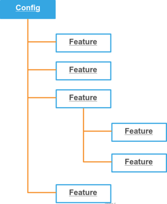

Configuration Architecture¶
The configuration is an efficient way how to prepare your application for a dispatch. It may be cached, and almost everything will be configured in a lazy style, on demand.
Configuration is basically a multidimensional array. Writing arrays in PHP is a little hell, because without a documentation we don’t know what to type, so configurators are introduced.
Note
Do not forget to enable a configuration cache, it will speed up your application.
use WebinoAppLib\Application\CoreConfig;
use WebinoConfigLib\Feature\ConfigCacheEnabled;
return new CoreConfig([
new ConfigCacheEnabled,
]);
Configuration Features¶
Configurators are used to generate array configurations for large PHP applications. With them, you can generate array configuration in the OOP way. Everything is config and config can contain features. Feature is a fragment of a pluggable configuration.
You can create your config features like this:
use WebinoConfigLib\Feature\AbstractFeature;
class MyFeature extends AbstractFeature
{
public function __construct($argOne, $argTwo)
{
$this->mergeArray([
'some_settings' => [
'anything' => ['foo' => $argOne, 'bar' => $argTwo],
],
]);
}
}
then when you create a configuration:
use WebinoConfigLib\Config;
var_dump((new Config([
new MyFeature('OPTION_ONE', 'OPTION_TWO'),
]))->toArray());
it will produce an array:
[
'some_settings' => [
'anything' => ['foo' => 'OPTION_ONE', 'bar' => 'OPTION_TWO'],
],
];
Now you should get the main idea what the configuration feature is.
Application Configuration¶
We can add or remove a feature from the config easily:
use WebinoAppLib\Feature\Config;
new Config([
new ExampleFeatureOne,
new ExampleFeatureTwo('DEFAULT_OPTION'),
]);
adding another feature and changing the option:
use WebinoAppLib\Feature\Config;
new Config([
new ExampleFeatureOne,
new ExampleFeatureTwo('MY_OPTION'),
new ExampleFeatureThree,
]);
Calling a method on a configuration feature is easy:
use WebinoAppLib\Feature\Config;
new Config([
(new ExampleFeatureFoo('ANY_OPTION'))
->setSomething('anything'),
]);
So we can produce very complex configuration on a couple of lines.
Services Configuration¶
With services configuration we can register invokables and factories to the application service manager.
use WebinoAppLib\Feature\Config;
use WebinoAppLib\Feature\Service;
new Config([
// registering invokable
new Service(MyInvokableService::class),
// invokable with alias
new Service(['MyInvokableAlias' => MyInvokableService::class]),
// registering service factory
new Service(MyService::class, MyServiceFactory::class),
// service with alias using factory
new Service('MyServiceAlias', MyServiceFactory::class),
]);
Listeners Configuration¶
We can configure an application listeners bindings.
use WebinoAppLib\Feature\Config;
use WebinoAppLib\Feature\Listener;
new Config([
// registering invokable listener
new Listener(MyInvokableListener::class),
// with alias
new Listener(['MyListenerAlias' => MyInvokableListener::class]),
// registering listener using factory
new Listener(MyListener::class, MyListenerFactory::class),
// listener alias using factory
new Listener(['MyListenerAlias' => MyListener::class], MyListenerFactory::class),
]);
Core Configuration¶
Services and listeners that should be available before application is fully configured must be registered into the core section of a configuration.
use WebinoAppLib\Application\CoreConfig;
use WebinoAppLib\Feature\CoreListener;
use WebinoAppLib\Feature\CoreService;
new CoreConfig([
// registering a core service
new CoreService(MyInvokableService::class),
// registering a core listener
new CoreListener(MyInvokableListener::class),
]);